DeepSeek-V3训完很久了，但有个问题值得亲手算一遍：在2048张H800上，到底该用FSDP还是流水线并行？两套系统都搭起来实测太贵，Edward Z. Yang选择拿起roofline这件老工具，用speed of light在电子表格里把账算清楚。
这是系列第三篇，目标有两个：走一遍DeepSeek-V3在Hopper上的光速roofline；更重要的是讲清近似背后的道理，比如6ND公式到底从哪来、什么时候不能用。MTP为简单起见继续省略。
上一篇里看过并行、activation checkpointing、低精度如何决定2048张H800集群的显存，找出了能fit的配置。“找到”这个词可能太强了：架构固定、去找让它在DeepSeek训练的硬件上跑好的配置，最后找到的就是DeepSeek选的，本不奇怪。有意思的运行模式是codesign，infra能对架构提输入，比如expert稀疏度，以后再单议。但怎么让模型fit常常有选择余地，要选让有效FLOP/s最大的那个。
第一个问题：用FSDP即ZeRO-3，还是流水线并行？实现流水线并行很痛苦，所以想不搭两套系统、不跑满集群就做决定。就算搭了实测，怎么知道不是自己的bug让对比失效？经典工具是roofline分析：FLOP总数固定，系统性能最重要的因素是分布式通信，正如kernel性能看算力和带宽谁先顶到。roofline会告诉你FSDP对DSv3是坏主意，因为它会在IB带宽上通信受限。用speed of light即SOL，假设算力和通信都跑到物理最快，按硬件spec或可控microbench，可以在电子表格里估出一步训练的wall time。
物理里没有什么比光速快，roofline里用GPU的FLOP/s和网络带宽的光速值，就是硬件能给的最好性能。达不到没关系，能告诉你桌上剩了多少。但问题是：硬件的光速到底是多少？显然的选择是NVIDIA宣传册的TFLOP/s，按频率、运算单元数、每周期FLOP算出来，但这些数对矩阵乘法实际上永远达不到。wgmma空转能跑到理论峰值的95%以上，但真GEMM还要从memory搬数、发非tensor core的bookkeeping指令、排好schedule，优化好的GEMM也有gap。更邪门的是跑非零数据可能撞功耗墙降频，GEMM性能取决于输入tensor里是什么数据，千万别在全零tensor上tune，功耗墙降频提perf/watt也很常见。
宣传和可达的matmul FLOP差距可能很大，下面用可达FLOP：直接在目标GPU上bench cublas大输入GEMM。这里用HuggingFace Smol Training Playbook的bench，假设H100的tensor core FLOP和H800一样。网络带宽方面，IB基本能跑到spec，直接用50 GB/s；DeepSeek论文自述H800的NVLink只测到160 GB/s单向，就用这个，影响不大，只是用来论证NVLink即使被砍也不是瓶颈。表1是全部光速输入。
| cell | quantity | value | SI | formula |
|---|---|---|---|---|
| πbf16 | H800 BF16峰值（spec） | 989 TFLOP/s | 9.89×10¹⁴ FLOP/s | 硬件spec |
| πsolbf16 | BF16 GEMM实测 | 758 TFLOP/s | 7.58×10¹⁴ FLOP/s | Smol，H100 torch.matmul取5次最好 |
| ηbf16 | 达到spec峰值的比例 | 76.6% | 7.66×10⁻¹ | πsolbf16 / πbf16 |
| πfp8 | H800 FP8峰值（spec） | 1.98 PFLOP/s | 1.98×10¹⁵ FLOP/s | 硬件spec，dense |
| πsolfp8 | FP8 GEMM实测 | 1.46 PFLOP/s | 1.46×10¹⁵ FLOP/s | Smol，H100 e4m3 _scaled_mm取5次最好 |
| ηfp8 | 达到spec峰值的比例 | 73.6% | 7.36×10⁻¹ | πsolfp8 / πfp8 |
| βIB | 每GPU的IB带宽 | 50 GB/s | 5.00×10¹⁰ B/s | 硬件spec，DeepSeek报告直接采用 |
| βNV | 每GPU每方向NVLink（spec） | 200 GB/s | 2.00×10¹¹ B/s | 硬件spec：H800从H100的450砍下来 |
| βsolNV | NVLink实测 | 160 GB/s | 1.60×10¹¹ B/s | DeepSeek-V3报告 |
| ηNV | 达到spec带宽的比例 | 80% | 8.00×10⁻¹ | βsolNV / βNV |
术语来自Williams、Waterman和Patterson的论文，原本用来理解程序在带宽受限时的性能。名字来自把算术强度即每从内存读写一字节能做多少FLOP，对可达FLOP/s画图，曲线的经典形状，见图1。
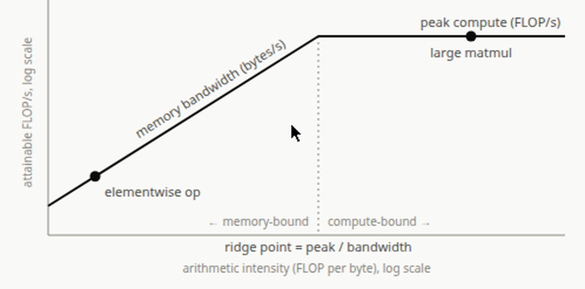
写GPU kernel时roofline很自然：告诉你kernel是算力受限还是带宽受限。带宽受限时把算力做快没用，算完就闲等HBM的字节。fuse多个kernel能把HBM读的代价摊到更多算力上，推进算力受限区。反过来一般不操心fuse GEMM，attention或低batch推理除外，因为矩阵乘天然算术强度高、多数场景算力受限；fuse两个GEMM也难，输入tile会被复用多次，不想重复算就得找个所有SM都能访问、放得下所有东西的地方，通常只有HBM。FlashAttention能把score矩阵放片上不走HBM，堪称小奇迹。
分布式训练的一整步也能做roofline，有两个大区别。第一，HBM不再是瓶颈，瓶颈通常是跨节点带宽，Blackwell的NVL72跨节点，但分析里一般把NVL域当“节点”看，比如IB带宽。第二，通信量取决于并行策略的选择，而FLOP总量在架构固定时是定的，怎么切都不变。好比披萨：FLOP是要吃的总量，怎么切每块变小，总和还是原来那个披萨。类比在recompute上不太灵，recompute是凭空变出更多披萨吃，现实里是好事，分布式训练里是坏事。
经验法则是想待在算力受限区，硬件资源用得efficient。分布式里就是算力时间要比通信时间长，写好的trainer能把通信overlap掉， effectively free，其实不free。算力盖不住通信，就该改点东西，改架构，或在架构固定时改并行，回到好的算力受限区。有些架构改动会让算力受限更难，尤其算力效率优化：GEMM切低精度让GEMM快很多，通信量不一定降，通信受限更严重。
承诺过要证明ZeRO-3在DSv3原始配置下通信受限，算法分三步：数一步的FLOP，除以硬件光速FLOP/s得算力时间；每种并行数每条link搬的字节和用的带宽，节点内走NVLink、节点间走IB，字节除以带宽得通信时间；比大小，算力时间大就是算力受限，通信大就是通信受限。link分开算，任一都可能成瓶颈，通常是IB。
经典训练FLOP近似是6ND，N是激活参数数，D是token数（总可训练token得总FLOP，一步的global batch token数得一步的FLOP）。global batch一般当固定量，科学定的：超过critical batch size再加batch，优化效率递减。这个公式不care并行策略：FLOP总要somewhere跑掉，怎么切都一样。
DSv3多数矩阵乘是FP8，quick and dirty：FLOP除以光速FP8 TFLOP/s。表2：N=36.6G激活参数，B=15360序列每步，S=4096 token每序列，D=62.9M token每步，C=13.8 EFLOP每步，2048卡，Tc=4.63秒，全按FP8 GEMM，后面T+c会修正。
| cell | quantity | value | SI | formula |
|---|---|---|---|---|
| N | 激活参数 | 36.6 G | 3.66×10¹⁰ | 模型输入 |
| B | 每步序列数 | 15,360 | 模型输入 | |
| S | 每序列token数 | 4,096 | 模型输入 | |
| D | 每步token数 | 62.9 M | 6.29×10⁷ | B · S |
| C | 每步FLOP | 13.8 EFLOP | 1.38×10¹⁹ | 6 · N · D |
| GPUs | 集群GPU数 | 2,048 | 模型输入 | |
| Tc | 光速下一步时间 | 4.63 s | 4.63×10⁰ | C / (GPUs · πsolfp8)，所有GEMM按FP8 |
6ND的核心思想：非attention的matmul占FLOP大头。一个学到的线性变换，每个权重对每个token做一次乘一次加：2 FLOP每参数。图2把每个FLOP指派到参数上，一目了然。
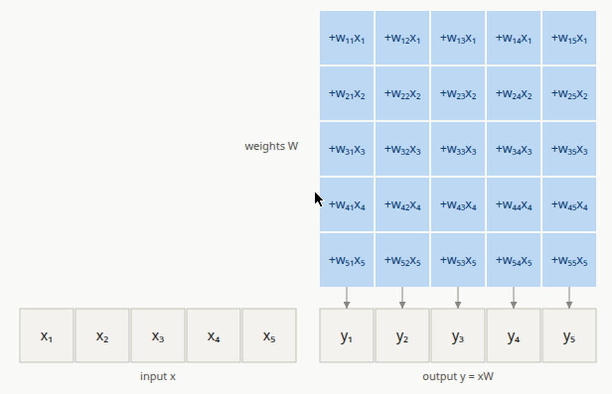
于是6ND = N×D×6：N是参数数，严格说不该含RMSNorm参数、router bias这种非matmul参数，但比例极小无所谓；D是token数；6是每matmul 2 FLOP × 共3个matmul，前向1个，反向算输入梯度和权重梯度各1个。
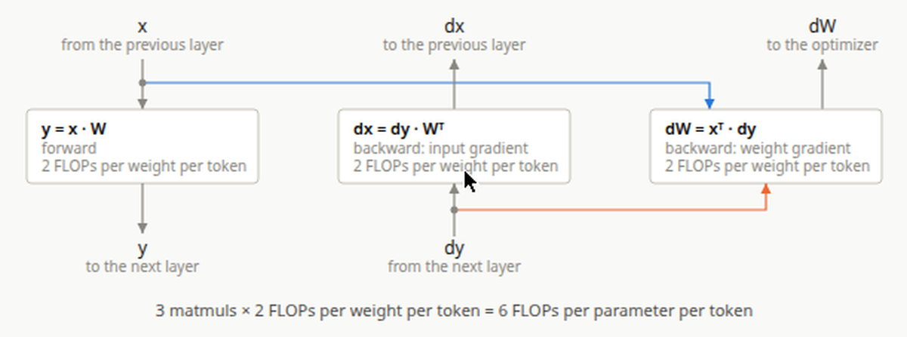
为什么这个近似合理？我们在论证scale compute时的渐进行为。DSv3只有一个671B，scale什么？预训练研究里架构其实是一族尽量相似的架构，小尺寸上做科学、fit scaling law、外推到hero run。给定算力预算，定义这族的标准配方：按Chinchilla固定tokens-per-parameter，参数和token同比例涨；固定长宽比，深度宽度成比例；固定attention和MLP之间的算力分配，hidden和intermediate size成比例；固定MoE稀疏结构，expert数和路由top-k不变。加深时所有transformer block的FLOP随深度线性涨；加宽时非matmul算力线性涨，但学到的线性变换即activation×weight的matmul，输入输出空间都变大，平方涨。极限下学到的线性变换FLOP压倒一切，6ND成立。
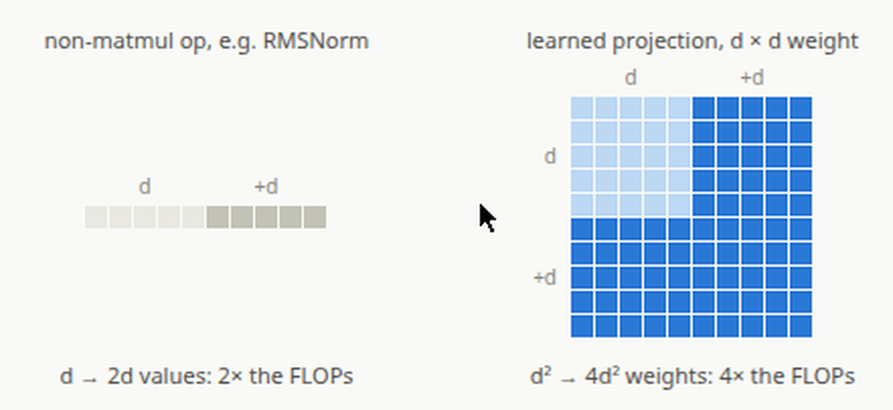
模型太简单了？是的。三处修正，按对wall time的影响排序：第一，6ND漏了attention的FLOP，attention core即QKᵀ和PV两个matmul，没有可训练参数，随序列长度scale，不可忽略；第二，为了塞下activation做了recompute，要加回去；第三，不是所有matmul都是FP8，attention、router、LM head是BF16，光速数不一样，要分开除。DSv3里第三条影响小，因为FP8算力占主导，但换个没有主导精度的模型修正会很大。
attention里不直接吃权重矩阵的activation matmul，随宽度线性涨，不像参数那样平方涨，但随序列长度涨。预训练常固定序列长度，只在midtraining加长做context length，于是6ND在预训练序列不太长时好用，midtraining长序列下attention成瓶颈时不好用。图3画算力涨、序列涨时各类FLOP占比：LM head的黄色那段值得说一句，LM head算力随词表大小scale，词表整个scaling ladder固定，所以小模型上LM head贵得显眼、占比巨大，但它只随hidden size线性涨，极限下占比趋近于零，和非matmul操作一样。
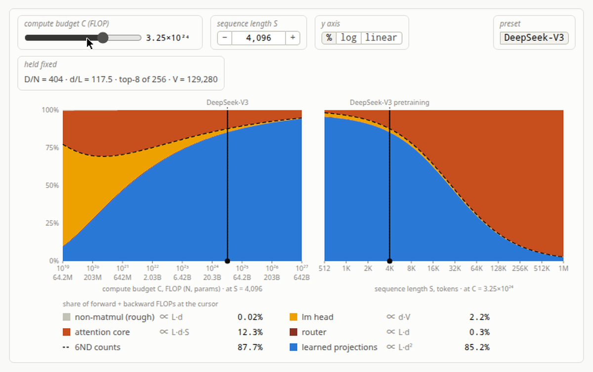
attention FLOP的常规公式是4S²d，S是序列长，d是所有head的总attention宽度，causal mask下减半：位置i的query平均attend (S+1)/2个key，比S/2多0.02%，忽略不计，用简化公式。假设FlashAttention风格kernel，反向自带recompute。表3：cqk=412 GFLOP每层每序列，cpv=275 GFLOP，cattn=687 GFLOP；Cattn=2.32 EFLOP每步，QKᵀ形状跑4次：前向、FlashAttention反向recompute、dQ、dK；PV形状跑3次：前向、dV、dP；每层每序列；Tattn=1.49秒。
| cell | quantity | value | SI | formula |
|---|---|---|---|---|
| Lmoe | MoE层数 | 58 | 架构 | |
| Ldns | dense层数 | 3 | 架构 | |
| L | 总层数 | 61 | Lmoe + Ldns | |
| nh | attention head数 | 128 | 架构 | |
| dh | head dim（qk nope，v） | 128 | 架构 | |
| dRh | head dim（qk rope） | 64 | 架构 | |
| cqk | QKᵀ形状FLOP（每层每序列） | 412 GFLOP | 4.12×10¹¹ | 2 · nh · (dh+dRh) · S · S / 2 |
| cpv | PV形状FLOP（每层每序列） | 275 GFLOP | 2.75×10¹¹ | 2 · nh · dh · S · S / 2 |
| cattn | attention FLOP（每层每序列前向） | 687 GFLOP | 6.87×10¹¹ | cqk + cpv |
| Cattn | 每步attention FLOP | 2.32 EFLOP | 2.32×10¹⁸ | L · B · (4 · cqk + 3 · cpv) |
| Tattn | attention core时间（BF16） | 1.49 s | 1.49×10⁰ | Cattn / (GPUs · πsolbf16) |
上一篇选的recompute策略重算很多norm，6ND里没建模；重算的GEMM只有MLA up-projection的输出。数参与recompute的参数：Nupq=37.7M每层，Nupkv=16.8M每层，Nrc=3.33G，Crc=419 PFLOP每步，前向重放，按每参数每token 2 FLOP，Trc=140毫秒。这个recompute很便宜，加到总wall time里几乎看不见。表4。
| cell | quantity | value | SI | formula |
|---|---|---|---|---|
| Nupq | q up-projection参数（每层） | 37.7 M | 3.77×10⁷ | 架构图读出 |
| Nupkv | kv up-projection参数（每层） | 16.8 M | 1.68×10⁷ | 架构图读出 |
| Nrc | 重放的GEMM参数 | 3.33 G | 3.33×10⁹ | L · (Nupq + Nupkv) |
| Crc | 每步recompute FLOP | 419 PFLOP | 4.19×10¹⁷ | 2 · Nrc · D |
| Trc | recompute时间（FP8） | 140 ms | 1.40×10⁻¹ | Crc / (GPUs · πsolfp8) |
架构图再拿出来，matmul按计算精度上色，见图4。多数FLOP是FP8，做法：从已算的FP8 FLOP里减掉BF16的FLOP，再用各自的光速数算wall time，attention跳过，上面已算。BF16算力可忽略，净wall time只调了121毫秒。
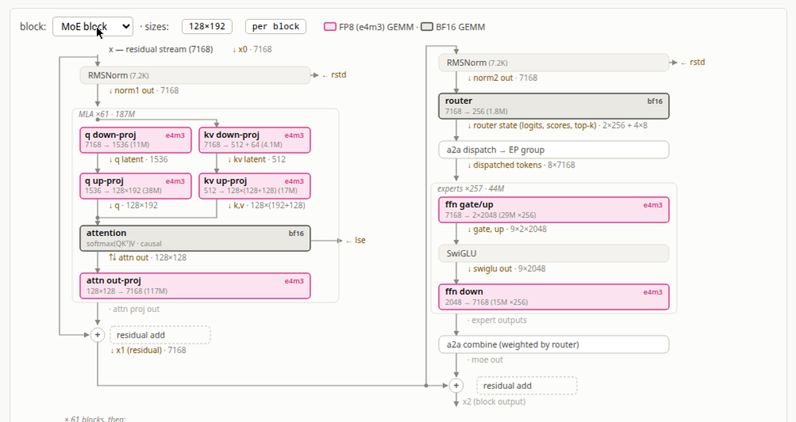
表5：Nbf16=1.03G（output head 7,168×129,280 + 58个router×7,168×256），Cbf16=390 PFLOP=6·Nbf16·D，Cfp8=13.4 EFLOP=C−Cbf16，Tfp8=4.50秒，Tbf16=251毫秒，ΔTbf16=121毫秒。加总：T+c = Tfp8 + Tbf16 + Tattn + Trc = 6.39秒。
| cell | quantity | value | SI | formula |
|---|---|---|---|---|
| Nbf16 | BF16 GEMM里的参数 | 1.03 G | 1.03×10⁹ | checkpoint统计：head 7,168×129,280 + 58个router×7,168×256 |
| Cbf16 | 6ND里的BF16 FLOP | 390 PFLOP | 3.90×10¹⁷ | 6 · Nbf16 · D |
| Cfp8 | 6ND里的FP8 FLOP | 13.4 EFLOP | 1.34×10¹⁹ | C − Cbf16 |
| Tfp8 | FP8 GEMM时间 | 4.50 s | 4.50×10⁰ | Cfp8 / (GPUs · πsolfp8) |
| Tbf16 | BF16 GEMM时间（head+router） | 251 ms | 2.51×10⁻¹ | Cbf16 / (GPUs · πsolbf16) |
| ΔTbf16 | 按精度分开多出的步时间 | 121 ms | 1.21×10⁻¹ | Tfp8 + Tbf16 − Tc（对比全按FP8） |
| Tfp8 | FP8 GEMM时间 | 4.50 s | 4.50×10⁰ | Cfp8 / (GPUs · πsolfp8) |
| Tattn | attention core时间（BF16） | 1.49 s | 1.49×10⁰ | Cattn / (GPUs · πsolbf16) |
| Trc | recompute时间（FP8） | 140 ms | 1.40×10⁻¹ | Crc / (GPUs · πsolfp8) |
| Tbf16 | BF16 GEMM时间（head+router） | 251 ms | 2.51×10⁻¹ | Cbf16 / (GPUs · πsolbf16) |
| T+c | 全修正后步时间 | 6.39 s | 6.39×10⁰ | Tfp8 + Tbf16 + Tattn + Trc |
expert并行区的dispatch和combine通信要多久？Hopper时代有点烦，EP跨节点，不像GB200/GB300那样整个在NVL72域里。但不复杂，先摆roofline的假设：均匀路由，即token被路由到的节点在EP组里均匀挑，含自己；用去重，同节点多GPU要同一个token，IB上只广播一次，NVLink本地分发，DSv3还有路由约束最多4个节点，最坏IB代价是4份token hidden vector；IB全双工，收发同时跑满，看一个节点收多少就行；本地NVLink相对IB快到可忽略，H800上160对50 GB/s只有3.2倍，但DeepSeek技术报告说“IB和NVLink通信完全overlap，每个token平均选3.2个expert每节点不引入NVLink额外开销”，4节点8 expert平均每节点2 expert。
实际比4份更少：和自己同节点的expert不走IB。简单算法：每个token的hidden vector送到3.5个远端节点，即8节点里均匀挑4个的期望通信数。这是高估，DeepSeek-V3限制至多4节点不是恰好4个：router先按top-2 expert分数挑4个节点，再取其中top-8 expert，可能某个被选节点一个active expert都没有。图里可切换DeepSeek-V3路由：约1/22的token只碰3个节点，均值压到3.46。
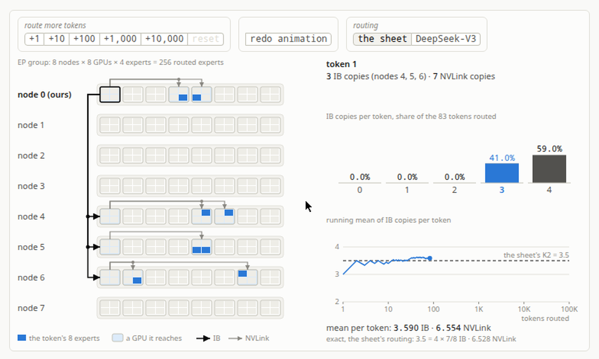
光速wall time：d=7,168，EP=64，NVL=8，M=4，MIB=3.5；Vdisp=25.1 KB按FP8，Vcomb=50.2 KB按BF16；Vtok=8.73 MB=2·(Vdisp+Vcomb)·Lmoe，前向加反向；DGPU=30.7 K；VEP=268 GB；TEP=5.36秒。FP8不能真按1字节算：DeepSeek-V3的FP8格式按1×128 tile量化，每个tile独立scale factor，每份token hidden vector带56个scale、224 B。补上后V+disp=25.9 KB，V+EP=271 GB，T+EP=5.42秒。DeepEP还有8 B header、token的top-k下标和权重、按16 B对齐的padding，略去不表。
回顾算力wall time：T+c=6.39秒，fEP=T+EP/T+c=84.8%。光速下光EP通信就用掉84.8%的算力时间。表6是全部EP数，图5是EP路由示意。
| cell | quantity | value | SI | formula |
|---|---|---|---|---|
| d | hidden dim | 7,168 | 架构 | |
| EP | expert并行度 | 64 | 模型输入 | |
| NVL | 每节点GPU数 | 8 | 硬件spec | |
| M | token送达节点数 | 4 | 节点上限，去重后至多4 | |
| MIB | 每token远端节点数 | 3.5 | M · (1 − NVL / EP) | |
| Vdisp | dispatch字节（每token每层） | 25.1 KB | 2.51×10⁴ | MIB · d · 1（FP8） |
| Vcomb | combine字节（每token每层） | 50.2 KB | 5.02×10⁴ | MIB · d · 2（BF16） |
| Vtok | EP的IB字节（每token） | 8.73 MB | 8.73×10⁶ | 2 · (Vdisp + Vcomb) · Lmoe（前向+反向） |
| DGPU | 每GPU每步token数 | 30.7 K | 3.07×10⁴ | D / GPUs |
| VEP | EP的IB字节（每GPU每步） | 268 GB | 2.68×10¹¹ | Vtok · DGPU |
| TEP | EP时间每步 | 5.36 s | 5.36×10⁰ | VEP / βIB |
| V5 | 每token的FP8 scale数 | 56 | d / 128（1×128 tile） | |
| V+disp | dispatch字节含scale（每token每层） | 25.9 KB | 2.59×10⁴ | MIB · (d + 4 · V5) |
| V+tok | EP的IB字节（每token） | 8.82 MB | 8.82×10⁶ | 2 · (V+disp + Vcomb) · Lmoe |
| V+EP | EP的IB字节（每GPU每步） | 271 GB | 2.71×10¹¹ | V+tok · DGPU |
| T+EP | EP时间每步（含scale） | 5.42 s | 5.42×10⁰ | V+EP / βIB |
| T+c | 全修正后步时间 | 6.39 s | 6.39×10⁰ | Tfp8 + Tbf16 + Tattn + Trc |
| fEP | EP时间占算力时间的比例 | 84.8% | 8.48×10⁻¹ | T+EP / T+c |
显存分析里定过要shard优化器状态，含FP32 master参数，于是要reduce-scatter把梯度和回各GPU的shard，sharded优化器步之后再all-gather把更新后的BF16参数发回所有GPU。算这些collective的代价要绕一下：在EP存在时理解分层all-gather，后面分析FSDP/ZeRO-3复用这些数。
参数的all-gather不一定全走IB，一部分可走NVLink。整个集群上做all-gather：不用把参数经IB发给2048张卡，用分层collective。先每GPU只和其它255节点上同local rank的GPU经IB all-gather，拿到1/8参数，再节点内8卡经NVLink all-gather各自的1/8。IB通信降到全量的1/8。但routed expert参数走另一条：EP下同NVLink域的节点本来就有不同expert，不需要跨NVLink all-gather，NVLink拿去做EP all-to-all了，这些参数只在IB上all-gather，NVLink一分不用，全额付IB。
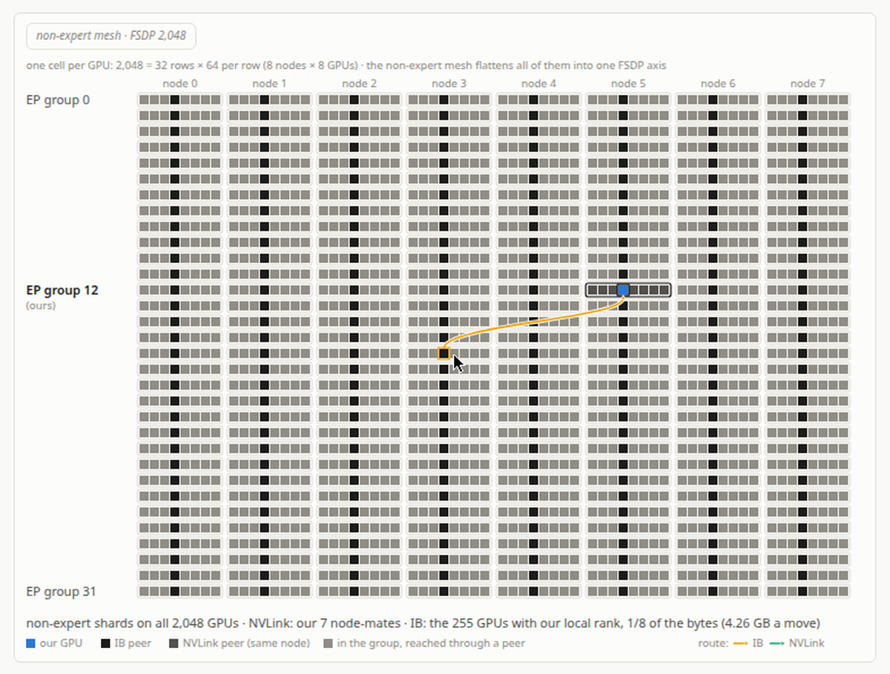
于是参数分两类：非expert参数在DP2048上shard，expert参数在EDP32上shard，IB账分开算，见图6，绿框是routed expert，蓝框是其它有参数的东西。写表格时小心单位：记参数个数不记字节数，因为通信dtype随操作变，reduce-scatter传FP32梯度，all-gather传BF16更新权重。
先非expert：Nne=17.1G，含attention、shared expert、dense FFN、norm、router、embedding、head；Ψne=2.14G=Nne/NVL，NVLink包办剩下7/8；IBDP=256=GPUs/NVL，每节点一张卡；Vne=2.13G=Ψne·(1−1/IBDP)。修正因子：住在自己节点的slice不走IB，只通信(1−1/IBDP)。值得注意的是除了这个因子，all-gather要传的数据量和shard到多少节点无关。再看expert：Nexp=654G，即58 MoE层×256 expert×3×7,168×2,048；Ψexp=10.2G=Nexp/EP，自己的EP slice，全额；EDP=32=GPUs/EP，这个slice的replica数；Vexp=9.90G=Ψexp·(1−1/EDP)。有意思：expert EP shard后参数比非expert少，IB通信反而更多，因为一点NVLink都蹭不到。
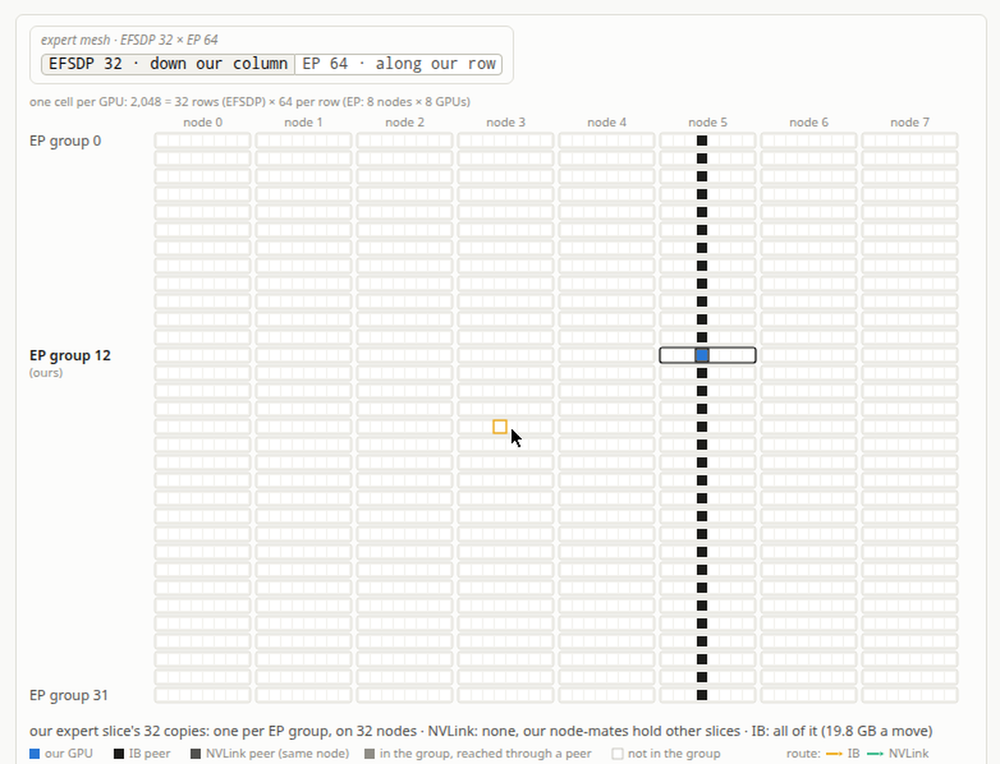
ZeRO-1的all-gather和reduce-scatter代价：Vag=24.1 GB=(Vne+Vexp)·2按BF16，Tag=481毫秒；Vrs=48.1 GB=(Vne+Vexp)·4按FP32，Trs=962毫秒。只上ZeRO-1，不用PP或FSDP，这就是总IB代价，Vsync=72.2 GB，Tsync=1.44秒，直接掉进通信受限区。但PP下模型shard会让ZeRO-1组操作的参数变少，FSDP不会。表7是全部ZeRO-1数。
| cell | quantity | value | SI | formula |
|---|---|---|---|---|
| Nne | 非expert参数 | 17.1 G | 1.71×10¹⁰ | checkpoint统计：attention、shared expert、dense FFN、norm、router、embedding、head |
| Ψne | 经IB的参数每GPU | 2.14 G | 2.14×10⁹ | Nne / NVL（NVLink包办剩下7/8） |
| IBDP | IB all-gather组 | 256 | GPUs / NVL（每节点一张卡） | |
| Vne | IB参数每GPU每次搬运 | 2.13 G | 2.13×10⁹ | Ψne · (1 − 1 / IBDP) |
| Nexp | routed expert参数 | 654 G | 6.54×10¹¹ | checkpoint统计：58 MoE层×256 expert×3×7,168×2,048 |
| Ψexp | 经IB的参数每GPU | 10.2 G | 1.02×10¹⁰ | Nexp / EP（自己的EP slice，全额） |
| EDP | IB all-gather组 | 32 | GPUs / EP（这个slice的replica数） | |
| Vexp | IB参数每GPU每次搬运 | 9.90 G | 9.90×10⁹ | Ψexp · (1 − 1 / EDP) |
| Vag | BF16 all-gather字节每GPU | 24.1 GB | 2.41×10¹⁰ | (Vne + Vexp) · 2（BF16） |
| Tag | all-gather时间 | 481 ms | 4.81×10⁻¹ | Vag / βIB |
| Vrs | FP32 reduce-scatter字节每GPU | 48.1 GB | 4.81×10¹⁰ | (Vne + Vexp) · 4（FP32） |
| Trs | reduce-scatter时间 | 962 ms | 9.62×10⁻¹ | Vrs / βIB |
| Vsync | ZeRO-1字节每GPU每步 | 72.2 GB | 7.22×10¹⁰ | Vag + Vrs |
| Tsync | ZeRO-1时间每步 | 1.44 s | 1.44×10⁰ | Vsync / βIB |
ZeRO-3即FSDP要更多all-gather：前向反向都要把参数all-gather回来。EP+ZeRO-1已经通信受限，FSDP多出来的参数all-gather和reduce-scatter还要抢IB带宽，坏成什么样，算一下。通常说的FSDP是：前向之前all-gather参数，反向之前再all-gather，梯度reduce-scatter回shard，见图10。
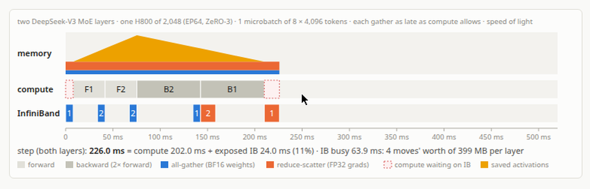
但上一篇里不光要砍参数显存，还要砍存activation的显存。PP下每GPU层数少，activation显存跟着降。FSDP不省activation显存，相对ZeRO-1只shard参数和梯度，不上Hopper就得对activation做点什么。全recompute即每块transformer block反向前全重算，能让activation fit，但多花整整一个前向的wall time，总算力多1/3，EP通信还要重跑一遍，通常是很烂的交易。
不用PP也能microbatch，即梯度累积：本地batch切microbatch，跑退化的PP schedule，只有一个pipeline stage，前向完立刻反向。关键是每个microbatch的梯度可单独算再加起来，靠求导的线性。图11是两个microbatch的例子，step 233.1毫秒，暴露13%。总算力时间不变，其实会变，microbatch小了GEMM更难打满硬件，但collective变多了：切得越细，能拿来overlap通信的算力越少。每microbatch都要reduce-scatter，不这么干就得攥着全部参数的梯度，不只是本地FSDP shard。
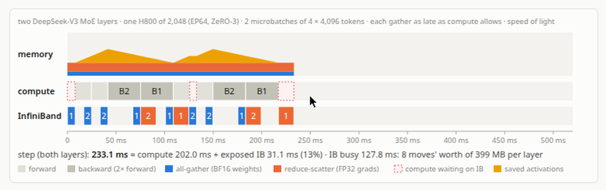
最后算力不够盖，通信露出来：图12是8个microbatch，step 514.6毫秒，暴露61%。8个microbatch通信受限，但8个又是让activation fit的唯一microbatch数，峰值47.73 GiB，H800的80 GiB里只有m=8能装下。
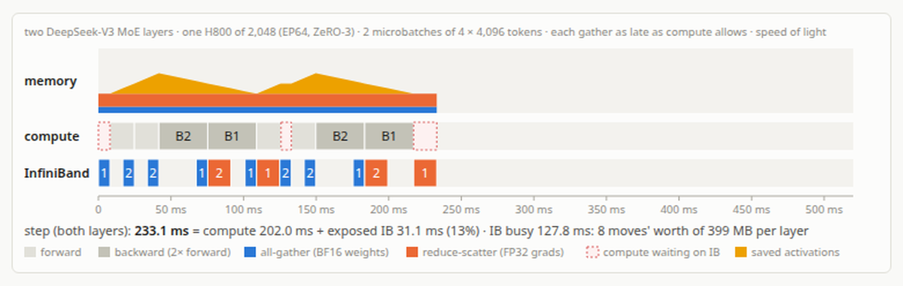
全FSDP下每microbatch做2次BF16 all-gather，前向1次、反向1次，加1次FP32 reduce-scatter，替代ZeRO-1每步1次的collective。Vmb=96.2 GB=2·Vag+Vrs，Tmb=1.92秒；2个microbatch 3.85秒，4个7.70秒，8个15.4秒。对比：T+c=6.39秒，T+EP=5.42秒。一个microbatch的EP+FSDP流量就让通信受限了，为fit activation被迫多microbatch是雪上加霜。暴露通信占比随microbatch数见图13，8个microbatch下69%的步时间是暴露的通信。剧透：PP只有4%。总结：想用FSDP就卡在两头夹击，第一，FSDP不省activation显存，想fit就减小microbatch，即加microbatch数；但第二，microbatch越小FSDP通信露得越多。表8是FSDP的数。
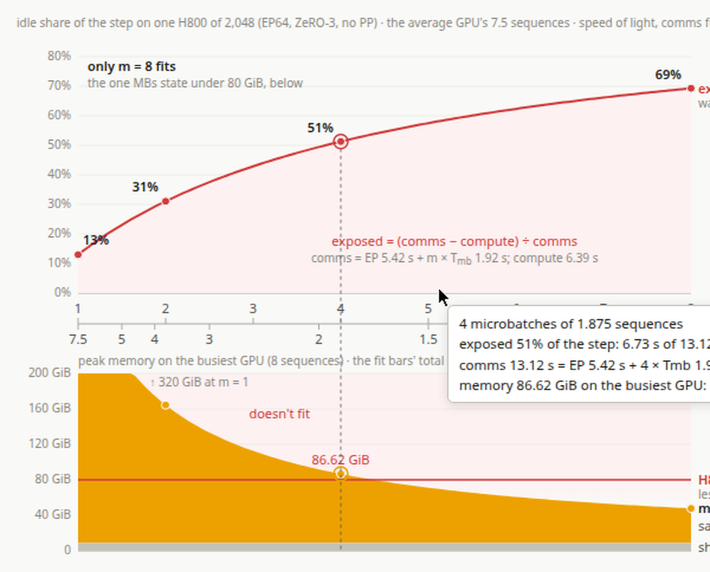
| cell | quantity | value | SI | formula |
|---|---|---|---|---|
| Vmb | ZeRO-3字节每GPU每microbatch | 96.2 GB | 9.62×10¹⁰ | 2 · Vag + Vrs |
| Tmb | ZeRO-3时间每microbatch | 1.92 s | 1.92×10⁰ | Vmb / βIB |
| T2mb | ZeRO-3时间（2个microbatch） | 3.85 s | 3.85×10⁰ | 2 · Tmb |
| T4mb | ZeRO-3时间（4个microbatch） | 7.70 s | 7.70×10⁰ | 4 · Tmb |
| T8mb | ZeRO-3时间（8个microbatch） | 15.4 s | 1.54×10¹ | 8 · Tmb |
| T+c | 全修正后步时间 | 6.39 s | 6.39×10⁰ | Tfp8 + Tbf16 + Tattn + Trc |
| T+EP | EP时间每步 | 5.42 s | 5.42×10⁰ | V+EP / βIB |
看看为什么流水线并行是更好的交易。PP只需要搬跨stage的residual stream，随hidden size scale，很便宜。沿用上一篇的DualPipeV布局：8个rank，每rank放2个chunk。DeepSeek自己跑的是16个rank的DualPipe，16个chunk每rank同样放2个，所以每rank参数份额、bubble、residual stream流量和下面算的一样。IB瓶颈基本碰不到：PP=8，sGPU=2，DPP=246 K=D·PP/GPUs，每replica每步的token数；Vres=14.3 KB=d·2按BF16；VPP=14.1 GB=2·sGPU·Vres·DPP，中间rank每个token每chunk经过它一次，前向送activation、反向送梯度；TPP=282毫秒=VPP/βIB。
但要付bubble的代价。一步开始时后面的stage要等前面的microbatch处理完才能开工，结尾时反向跑完前面的stage可能没活干，见图14。标准1F1B的bubble是(PP−1)(F+B)，F和B是一个stage一个microbatch的前向反向时间。每stage每步做m个microbatch的F+B，bubble占算力的比例就是(PP−1)/m：只和stage数、microbatch数有关，和模型大小无关。一般microbatch越多bubble越小，代价是microbatch小了GEMM利用率差，本地batch用完就加不上去了。m=60=DPP/S，每microbatch一个序列；b1F1B=11.7%=(PP−1)/m，T1F1B=745毫秒=T+c·b1F1B。这已经比FSDP的暴露时间好太多。
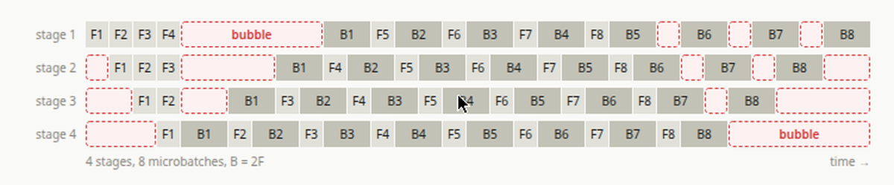
还能更好。用DualPipeV schedule，bubble压到(PP−1)(F&B+B−3W)，F、B、W是一个chunk的时间，W是反向里权重梯度那一半，W≈F，F&B是重叠跑的前向加反向。tB=2即B≈2F，tW=1即W≈F，tF&B=3=1+tB，算力受限时即F+B；bDual=3.89%=(PP−1)·(tF&B+tB−3·tW)/(sGPU·m·(1+tB))，TDual=248毫秒=T+c·bDual。
最后一个注：上PP也要做ZeRO-1 collective，但只对自己stage上的参数做，通信量除以PP。VPPne=259 M=Ψne/PP·(1−PP/IBDP)，32个节点持有我们rank的chunk；VPPexp=958 M=Ψexp/PP·(1−PP/EDP)，4个replica；VPPsync=7.30 GB=(VPPne+VPPexp)·(2+4)，BF16 AG加FP32 RS，平均rank，带embedding和head的rank搬更多；TPPsync=146毫秒=VPPsync/βIB。idle时间随microbatch数见图15，microbatch 60时DualPipeV的bubble只有3.7%，峰值61.74 GiB，只有m=60能在80 GiB线以下。为什么activation显存随microbatch数下降？microbatch数不影响在飞的microbatch数，DualPipeV schedule里恒为8.5个，但本地batch固定时microbatch数越多每个microbatch越小，显存跟着降。表9是PP的全部数。
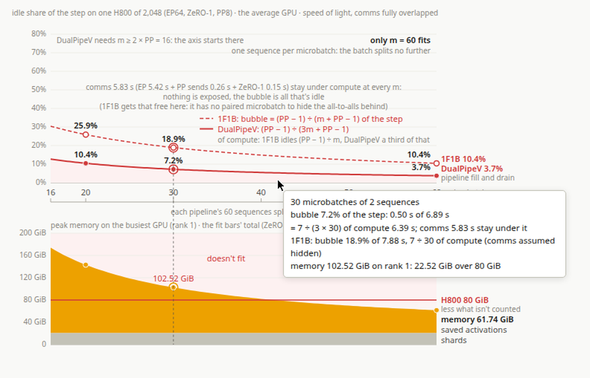
| cell | quantity | value | SI | formula |
|---|---|---|---|---|
| PP | 流水线rank数 | 8 | DualPipeV布局；DeepSeek实跑用16 rank的DualPipe | |
| sGPU | 每GPU的chunk数 | 2 | DualPipeV：16个stage折到8个rank | |
| DPP | 每replica每步token数 | 246 K | 2.46×10⁵ | D · PP / GPUs |
| Vres | residual字节每token | 14.3 KB | 1.43×10⁴ | d · 2（BF16） |
| VPP | PP的IB字节每GPU每步 | 14.1 GB | 1.41×10¹⁰ | 2 · sGPU · Vres · DPP |
| TPP | PP时间每步 | 282 ms | 2.82×10⁻¹ | VPP / βIB |
| m | 每replica每步microbatch数 | 60 | DPP / S（每microbatch一个序列） | |
| b1F1B | 1F1B bubble占算力比例 | 11.7% | 1.17×10⁻¹ | (PP − 1) / m（F+B约掉） |
| T1F1B | 1F1B bubble时间每步 | 745 ms | 7.45×10⁻¹ | T+c · b1F1B |
| tB | 反向时间（以F为单位） | 2 | B≈2F | |
| tW | 权重梯度时间（以F为单位） | 1 | W≈F | |
| tF&B | 重叠的F&B时间（以F为单位） | 3 | 1 + tB（算力受限：F+B） | |
| bDual | DualPipeV bubble占算力比例 | 3.89% | 3.89×10⁻² | (PP − 1) · (tF&B + tB − 3 · tW) / (sGPU · m · (1 + tB)) |
| TDual | DualPipeV bubble时间每步 | 248 ms | 2.48×10⁻¹ | T+c · bDual |
| VPPne | IB非expert参数每GPU每次搬运 | 259 M | 2.59×10⁸ | Ψne / PP · (1 − PP / IBDP) |
| VPPexp | IB expert参数每GPU每次搬运 | 958 M | 9.58×10⁸ | Ψexp / PP · (1 − PP / EDP) |
| VPPsync | ZeRO-1字节每GPU每步 | 7.30 GB | 7.30×10⁹ | (VPPne + VPPexp) · (2+4) |
| TPPsync | ZeRO-1时间每步 | 146 ms | 1.46×10⁻¹ | VPPsync / βIB |
PP在2048张H800上训DSv3明显更优。假设完美overlap，估一步时间：PP布局下IB各项加起来5.85秒小于算力的6.39秒，光速下这一步是算力受限，DualPipeV bubble是唯一的idle。余量很薄：通信离算力不到10%，很可能是infra-model codesign的人为痕迹。
表10：T+c=6.39秒，T+EP=5.42秒，TPP=282毫秒，TPPsync=146毫秒，TIB=5.85秒=T+EP+TPP+TPPsync，小于T+c，算力受限，通信被overlap；TDual=248毫秒=T+c·bDual；Tstep=6.64秒=T+c+TDual，即算力加bubble。
| cell | quantity | value | SI | formula |
|---|---|---|---|---|
| T+c | 全修正后步时间 | 6.39 s | 6.39×10⁰ | Tfp8 + Tbf16 + Tattn + Trc |
| T+EP | EP时间每步 | 5.42 s | 5.42×10⁰ | V+EP / βIB |
| TPP | PP时间每步 | 282 ms | 2.82×10⁻¹ | VPP / βIB |
| TPPsync | ZeRO-1时间每步 | 146 ms | 1.46×10⁻¹ | VPPsync / βIB |
| TIB | PP布局下IB总时间每步 | 5.85 s | 5.85×10⁰ | T+EP + TPP + TPPsync（小于T+c：算力受限，通信被overlap） |
| TDual | DualPipeV bubble时间每步 | 248 ms | 2.48×10⁻¹ | T+c · bDual |
| Tstep | 光速下一步时间 | 6.64 s | 6.64×10⁰ | T+c + TDual（算力加bubble） |
和DSv3自述的预训练时间对比，看光速roofline离实际差多远。Tstep=6.64秒，DGPU=30,720，ρsol=4.63×10³=DGPU/Tstep，ρDS=1.54×10³=14.8·10¹²/(2,664,000·3,600)（DeepSeek-V3报告：14.8T预训练token用2.664M H800 GPU小时），fsol=3.00×=ρsol/ρDS。差了3倍！差在哪？表11。
| cell | quantity | value | SI | formula |
|---|---|---|---|---|
| Tstep | 光速下一步时间 | 6.64 s | 6.64×10⁰ | T+c + TDual（算力加bubble） |
| DGPU | 每GPU每步token数 | 30,720 | 3.07×10⁴ | D / GPUs |
| ρsol | 光速下每GPU每秒token数 | 4.63×10³ | 4.63×10³ | DGPU / Tstep |
| ρDS | 实测每GPU每秒token数 | 1.54×10³ | 1.54×10³ | 14.8·10¹² / (2,664,000·3,600) |
| fsol | 光速相对现实的倍数 | 3.00× | 3.00×10⁰ | ρsol / ρDS |
DeepSeek放了一个64卡H800 profiling run的trace，EP64配置，抓一个4096 token microbatch上4层MoE的前向chunk，和另一个4层MoE的反向chunk重叠跑。路由按完美均衡模拟，PP通信没抓。拿它定位真实和光速的差：逐个kernel过profile，和SOL对一遍。trace时间是chunk内4层的平均；routed expert GEMM还按32,768个routed row归一过，实际抓到前向32,512、反向32,128，略少；权重梯度项是4个并发expert kernel的elapsed span不是单kernel均值，所以total不是原始wall time。
表12是逐kernel光速表。nc=132是跑算力的SM数，DeepSeek实跑分20个给通信剩112，表里可切换。tdnq=61.9 us=2·Ndnq·S/πcfp8，tupq=212 us，tattn=907 us=cattn/πcbf16，tBattn=2,360 us=(3·cqk+2·cpv)/πcbf16，重算的QKᵀ、dQ、dK，以及dV、dP；to=660 us，trt13=1,320 us=2·N13·k·S/πcfp8，每GPU平均k·S个routed row。tΣF=4,210 us是前向，tΣB=5,970 us是输入梯度，等于tΣF−tattn+tBattn+tupq+tupkv：每个GEMM的输入梯度花掉它的前向，attention core走自己的反向，加上重放的up-projection；tΣW=3,300 us是权重梯度，等于tΣF−tattn：每个权重梯度花掉它GEMM的前向，attention core无权重。
| cell | quantity | value | SI | formula |
|---|---|---|---|---|
| Ndnq | q down-projection参数（每层） | 11,010,048 | 架构图读出 | |
| Ndnkv | kv down-projection参数（每层） | 4,128,768 | 架构图读出 | |
| No | attention output projection参数（每层） | 117,440,512 | 架构图读出 | |
| Nr | router参数（每层） | 1,835,008 | 架构图读出 | |
| N13 | gate+up参数（一个expert） | 29,360,128 | 架构图读出 | |
| N2 | down参数（一个expert） | 14,680,064 | 架构图读出 | |
| k | 每token路由expert数 | 8 | 架构 | |
| nSM | H800的SM数 | 132 | 硬件spec | |
| nc | 跑算力的SM数 | 132 | 模型输入；DeepSeek实跑分20个给通信，剩112 | |
| πcfp8 | nc个SM上的FP8 GEMM速率 | 1.46 PFLOP/s | 1.46×10¹⁵ | πsolfp8 · nc / nSM |
| πcbf16 | nc个SM上的BF16 GEMM速率 | 758 TFLOP/s | 7.58×10¹⁴ | πsolbf16 · nc / nSM |
| tdnq | Q down projection | 61.9 us | 6.19×10⁻⁵ | 2 · Ndnq · S / πcfp8 |
| tdnkv | KV down projection | 23.2 us | 2.32×10⁻⁵ | 2 · Ndnkv · S / πcfp8 |
| tupq | Q up projection | 212 us | 2.12×10⁻⁴ | 2 · Nupq · S / πcfp8 |
| tupkv | KV up projection | 94.4 us | 9.44×10⁻⁵ | 2 · Nupkv · S / πcfp8 |
| tattn | attention core（前向） | 907 us | 9.07×10⁻⁴ | cattn / πcbf16 |
| tBattn | attention core（反向） | 2,360 us | 2.36×10⁻³ | (3 · cqk + 2 · cpv) / πcbf16 |
| to | attention output projection | 660 us | 6.60×10⁻⁴ | 2 · No · S / πcfp8 |
| tr | router | 19.8 us | 1.98×10⁻⁵ | 2 · Nr · S / πcbf16 |
| tsh13 | shared expert gate/up | 165 us | 1.65×10⁻⁴ | 2 · N13 · S / πcfp8 |
| tsh2 | shared expert down | 82.6 us | 8.26×10⁻⁵ | 2 · N2 · S / πcfp8 |
| trt13 | routed expert gate/up | 1,320 us | 1.32×10⁻³ | 2 · N13 · k · S / πcfp8 |
| trt2 | routed expert down | 660 us | 6.60×10⁻⁴ | 2 · N2 · k · S / πcfp8 |
| tΣF | F：前向 | 4,210 us | 4.21×10⁻³ | 各kernel前向求和 |
| tΣB | B：输入梯度 | 5,970 us | 5.97×10⁻³ | tΣF − tattn + tBattn + tupq + tupkv |
| tΣW | W：权重梯度 | 3,300 us | 3.30×10⁻³ | tΣF − tattn |
表13是SOL和trace的逐kernel对比。光速系统性高估GEMM性能，不意外：真实尺寸下很难跑出最优条件的microbench数，普遍慢1.4到2.8倍。但细看profile还有个问题：光速分析假设算力和通信overlap免费，其实不免费；DeepSeek的DeepEP kernel要20个SM处理通信，光速时间该涨18%，表里可切换。还能看到现实里非matmul算力吃掉了前向9.3毫秒里的2.7毫秒、反向14.9毫秒里的5.3毫秒。
| kernel | F SOL | F trace | F × | B SOL | B trace | B × | W SOL | W trace | W × |
|---|---|---|---|---|---|---|---|---|---|
| Q down projection (FP8) | 61.9 us | 104 | 1.67 | 61.9 us | 111 | 1.79 | 61.9 us | 136 | 2.20 |
| KV down projection (FP8) | 23.2 us | 53.3 | 2.29 | 23.2 us | 64.8 | 2.79 | 23.2 us | 69.8 | 3.00 |
| Q up projection (FP8) | 212 us | 372 | 1.75 | 212 us | 332 | 1.56 | 212 us | 462 | 2.18 |
| KV up projection (FP8) | 94.4 us | 244 | 2.59 | 94.4 us | 220 | 2.33 | 94.4 us | 222 | 2.35 |
| FlashAttention (BF16) | 907 us | 1,237 | 1.36 | 2,360 us | 3,779 | 1.60 | |||
| attention output projection (FP8) | 660 us | 901 | 1.36 | 660 us | 927 | 1.40 | 660 us | 1,499 | 2.27 |
| router (BF16) | 19.8 us | 46.5 | 2.34 | 19.8 us | 47.3 | 2.38 | 19.8 us | 40.5 | 2.04 |
| shared expert gate/up (FP8) | 165 us | 259 | 1.57 | 165 us | 241 | 1.46 | 165 us | 370 | 2.24 |
| shared expert down (FP8) | 82.6 us | 138 | 1.67 | 82.6 us | 126 | 1.53 | 82.6 us | 181 | 2.19 |
| routed experts gate/up (FP8) | 1,320 us | 1,877 | 1.42 | 1,320 us | 2,004 | 1.52 | 1,320 us | 2,710 | 2.05 |
| routed experts down (FP8) | 660 us | 1,043 | 1.58 | 660 us | 882 | 1.34 | 660 us | 1,304 | 1.97 |
| Q up projection, replayed (FP8) | 212 us | 374 | 1.76 | ||||||
| KV up projection, replayed (FP8) | 94.4 us | 244 | 2.59 | ||||||
| everything else (not a matmul) | 0 | 2,713 | 0 | 5,307 | 0 | 578 | |||
| idle (not waiting on communication) | 0 | 281 | 0 | 263 | 0 | 21 | |||
| total | 4,210 us | 9,267 | 2.20 | 5,970 us | 14,922 | 2.50 | 3,300 us | 7,593 | 2.30 |
再看实际通信和光速的对比。表14是通信光速表：tdisp=2,120 us=S·V+disp/βIB，即一层一microbatch的dispatch；tcomb=4,110 us=S·Vcomb/βIB；tΣEP=6,230 us=tdisp+tcomb，前向反向各一次dispatch加combine。
| cell | quantity | value | SI | formula |
|---|---|---|---|---|
| tdisp | dispatch（一层一microbatch） | 2,120 us | 2.12×10⁻³ | S · V+disp / βIB |
| tcomb | combine（一层一microbatch） | 4,110 us | 4.11×10⁻³ | S · Vcomb / βIB |
| tΣEP | EP（单方向） | 6,230 us | 6.23×10⁻³ | tdisp + tcomb（前向反向各一次dispatch加combine） |
表15：dispatch按FP8含scale，前向2,120对4,346，慢2.05倍，反向2,120对3,405，慢1.61倍；combine按BF16，前向4,110对5,994，慢1.46倍，反向4,110对6,368，慢1.55倍；notify即每次传输前的握手，前向0对4,932，反向0对3,212；dispatch layout和FP8 cast前向0对103，反向0对270；idle即不等算力，前向0对76.0，反向0对179；total前向6,230对15,450，慢2.48倍，反向6,230对13,435，慢2.16倍。平均有点误导，DeepEP的notify握手方差很大，卡在等远端rank。光速系统性高估了网络，但比例是对的：dispatch对combine两边都接近1比2。
trace真正的启示：DeepSeek的算力和通信卡在刀锋上均衡。单rank抓包里算力和通信几乎各占一半，每层约31毫秒对29毫秒，4层里有一层反过来，至多是勉强算力受限。这不太可能是巧合，他们大概率按真实profile把系统调到了尽量均衡。
这解释不了完整的端到端3倍差，但trace覆盖了大头：算力跑出光速的2.2到2.5倍时间，通信也慢同样的2.2到2.5倍。profile不是完整训练步，测的是路由均衡的稳态层。真实的路由不均衡、pipeline bubble、MTP、训练早期的batch size ramp、checkpointing、straggler合起来补剩下的gap，不难想象。
| kernel | F SOL | F trace | F × | B SOL | B trace | B × |
|---|---|---|---|---|---|---|
| dispatch (FP8, with scales) | 2,120 us | 4,346 | 2.05 | 2,120 us | 3,405 | 1.61 |
| combine (BF16) | 4,110 us | 5,994 | 1.46 | 4,110 us | 6,368 | 1.55 |
| notify（每次传输前的握手） | 0 | 4,932 | 0 | 3,212 | ||
| dispatch layout和FP8 cast | 0 | 103 | 0 | 270 | ||
| idle（不等算力） | 0 | 76.0 | 0 | 179 | ||
| total | 6,230 us | 15,450 | 2.48 | 6,230 us | 13,435 | 2.16 |
参考：https://deepseek-v3.ezyang.com/studies/03-roofline.html